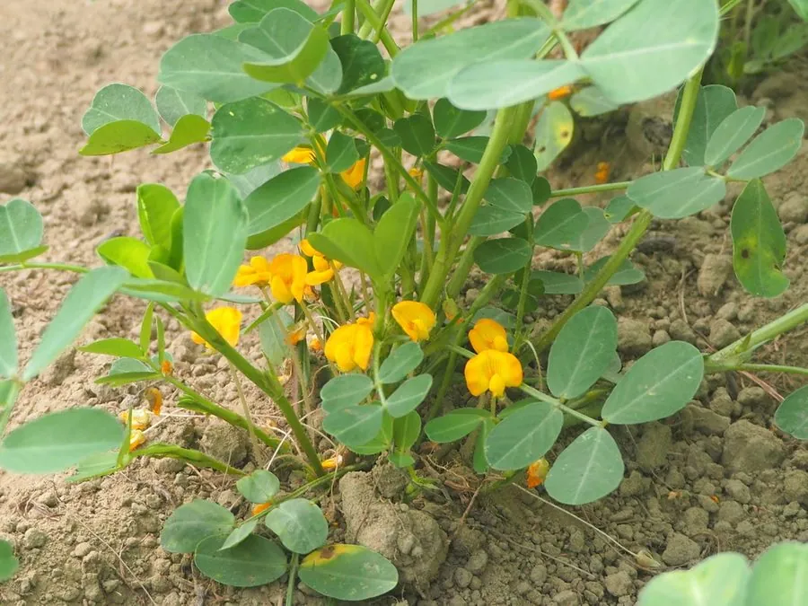

农作物与经济植物 · 植物界
花生 Arachis hypogaea

花生开花授粉后子房柄伸入土中结果，故称“落花生”；种子富含油脂与蛋白质，是重要的油料和经济作物。
- 分类
- 门被子植物门纲双子叶植物纲目豆目科豆科属落花生属
- 栖息环境
- 温暖地区的沙壤土农田，喜光照充足、排水良好与疏松土壤
- 地理分布
- 原产南美洲，现主产于中国、印度、美国、尼日利亚等国
- 保护级别
- 暂无评估（栽培作物）
物种志
花生是一年生草本，株高 30–80 cm，茎直立或匍匐，有棱，密被茸毛。叶为偶数羽状复叶，小叶倒卵形，边缘全缘，具托叶。花黄色，蝶形，单生或簇生于叶腋，开花授粉后，子房柄向下伸长钻入土中，在土里发育成果实，因此得名“落花生”。荚果长椭圆形，表面有网状纹路，内含 2–4 粒种子，种皮有淡红、紫红等色。
花生原产南美洲，约 5000–7000 年前在巴西、秘鲁一带被驯化，16 世纪随大航海传入中国，如今中国是世界上最大的花生生产国。它喜温暖、光照充足和排水良好的沙壤土，尤其需要疏松土壤以便子房入土。花生种子含脂肪约 45%–50%、蛋白质约 25%–30%，可榨取花生油，炒食、煮食或制成酱料；花生壳可作燃料和培养基，茎叶是优质饲料。花生易受黄曲霉菌污染，储存需保持干燥。
形态与习性
- 株高30–80 cm，茎直立或匍匐
- 叶偶数羽状复叶
- 花黄色蝶形花
- 结果子房柄入土结实
- 种子含脂肪约 45%–50%
- 主要用途榨油、炒食与花生酱
- 原产地南美洲
趣味知识
- 花生开花后子房柄会向下钻进土里，果实是在土中长大的，所以叫“落花生”。
- 花生其实是荚果里的种子，并不是真正的坚果。
- 花生受潮后易感染黄曲霉菌，产生有毒的黄曲霉毒素。